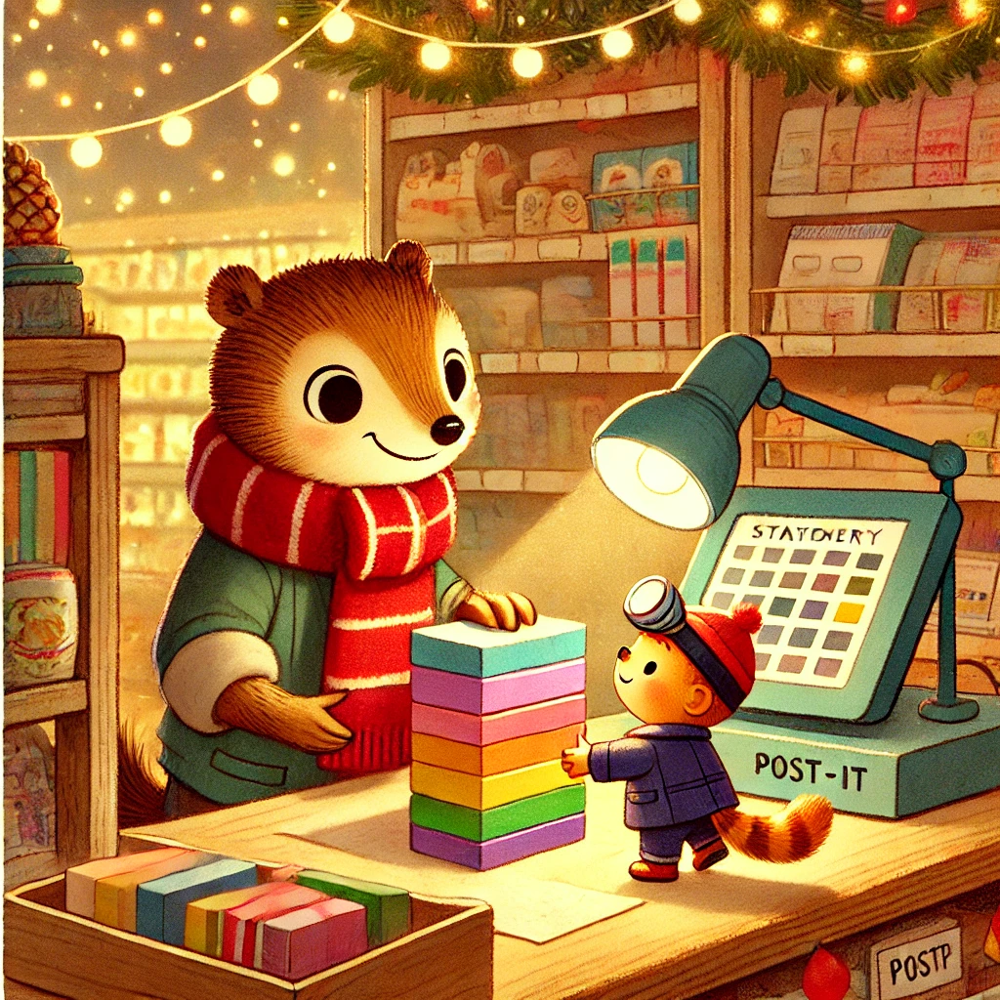
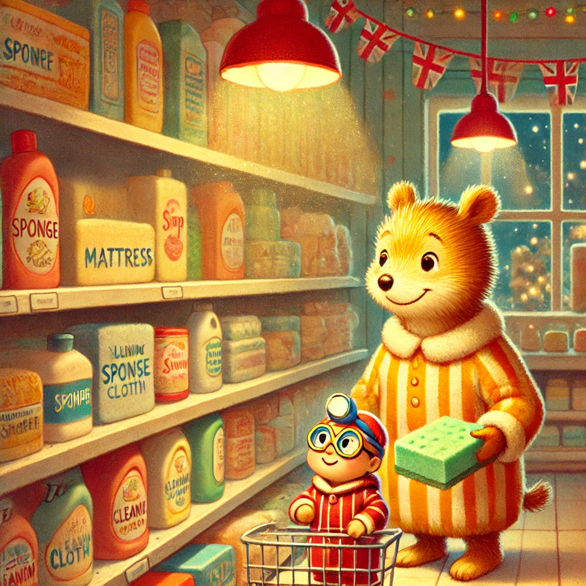

Es war einmal ein Wiesel namens Winnie, das oben auf dem Knabbereienregal eines Supermarkts in Leknes auf den Lofoten wohnte. Eines Tages beschloss Winnie, dass ihr neuer Freund Biep sein Büro unter der Kasse etwas gemütlicher einrichten musste.
Sie marschierte entschlossen hinüber und hörte gerade noch die letzten Bieps, die Biep vom Feierabend trennten. Sie klopfte an die Scheibe und Biep gesellte sich zu ihr. Sie erzählte ihm von ihrem Plan und Biep willigte begeistert ein.
So zogen die beiden Richtungen Schreibwarenabteilung. Das erste, was die beiden zu Bieps Kammer schleppten waren Stapel verschieden farbener Post-its. Damit tapezierten die beiden die Wände, um etwas Freude einziehen zu lassen.
Als nächstes zogen die beiden los zu den Reinigungsprodukten: ein Schwamm als Matratze und ein Wischtuch als Bettdecke! Jetzt wurde es schon richtig gemütlich. Als letztes hieften die beiden noch eine große Kerze und zwei kleine Kerzen in den kleinen Raum, der damit sich einen Tisch und zwei Stühle hatte.
Zufrieden saßen die beiden um den Tisch herum, im Kerzenschein und aßen Chips.